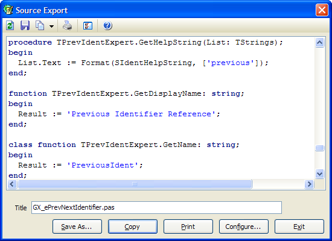

Source Export |
|
This expert enables you to save source code to an HTML or RTF file or to the clipboard with syntax highlighting preserved. Syntax highlighting of Delphi, C/C++, HTML, C#, XML, and SQL files is provided. You can export the whole file, the portion that is selected in the IDE, or you can edit the shown source to customize the output. The print button allows syntax-highlighted printing as well. You can also set the colors used for the syntax highlighting and the default clipboard format by clicking the Configure button.
The copy button dropdown has three choices: •Formatted text/RTF/HTML - Preserves the fonts/colors of the source text and places it on the clipboard in all three formats. The application you paste the code into will choose the clipboard format it prefers. •HTML fragment text - Places the plain text of the HTML source on the clipboard. This text can then be pasted into an existing HTML document's source code. •RTF fragment text - Places the plain text of the RTF source on the clipboard. This text can then be pasted into an existing RTF document's source code.  Note: GExperts uses CSS to define HTML font styles. Because you are not supposed to duplicate CSS class definitions more than once per file, GExperts does not copy the CSS style definitions into every copied HTML fragment. The best way to preserve the styles when copying multiple fragments into a single HTML document or web site is to export a source code file to an HTML file and copy the CSS definitions from there to into the header of your HTML document or an externally referenced .css file if you want to share the styles across multiple pages. After this process, any further fragments you paste into your document will automatically pick up the shared CSS styles.
|